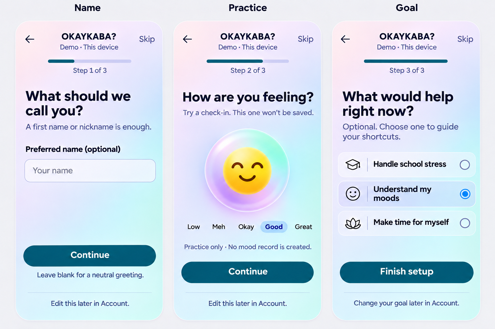
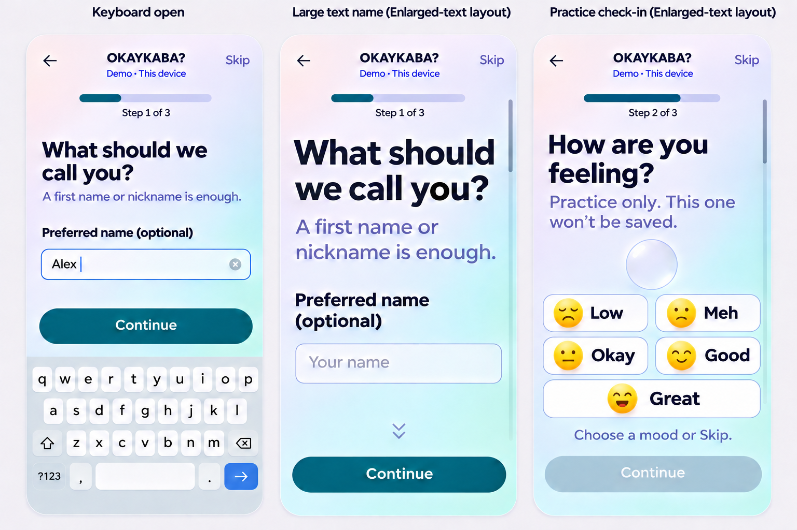
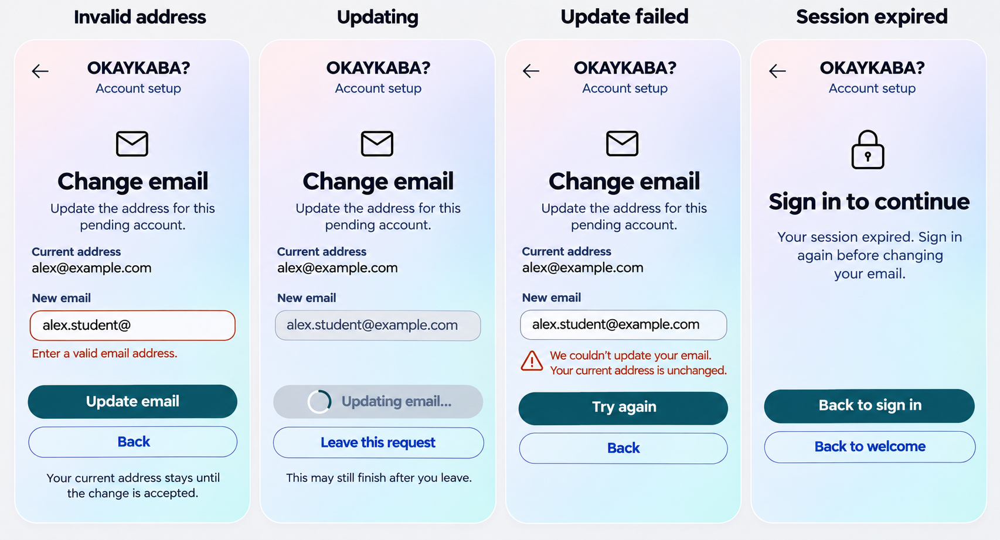

OKAYKABA? · FIRST-RUN · REVISION 3
Three refinements. One consistent flow.
Option 1 preserved. Three boards, ten screen panels. Apple-inspired clarity, legibility and recoverable actions.
These boards supersede earlier setup-header geometry, enlarged-text mood icons and missing Change email errors. The other first-run screens and navigation remain the same. This is a review document, not a working app.
1. Shared setup header
Name, Practice and Goal share the same progress treatment. Blank-name continuation, unsaved practice and optional goal behavior remain intact.
Open full-resolution board
2. Keyboard and enlarged-text moods
The five mood choices use one yellow expression family and wrap at enlarged text. Continue stays above the schematic keyboard.
Open full-resolution board
3. Change email error states
Invalid address, pending update, confirmed failure and expired session now have explicit actions and destinations.
Open full-resolution board
Ready for your design review
Opaque-surface and reduced-motion alternatives are specified in the navigation notes. Actual contrast, font scaling, keyboard behavior, assistive technology and account requests remain untested. No app source changed. Remaining app screens await review.